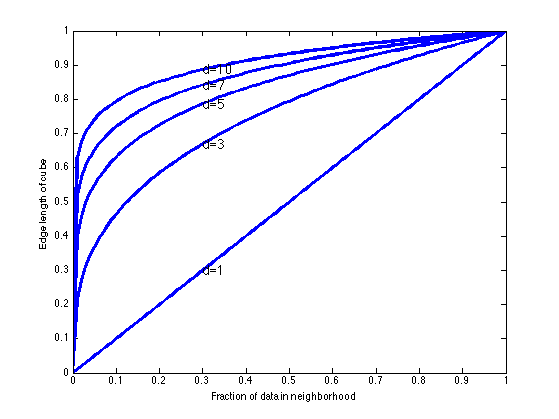

Illustrate curse of dimensionlaity
Based on Hastie book fig 2.6
d = [1,3,5,7,10]; s = [0:0.01:1]; vol = zeros(length(s),length(d)); for i=1:numel(d) dim = d(i); vol(:,i) = s.^(1/dim); end plot(s,vol,'b','linewidth',3); xlabel('Fraction of data in neighborhood'); ylabel('Edge length of cube'); for dim=d text(0.3,0.3^(1/dim),sprintf('d=%d',dim), 'fontsize', 14); end printPmtkFigure('curseDimensionality')